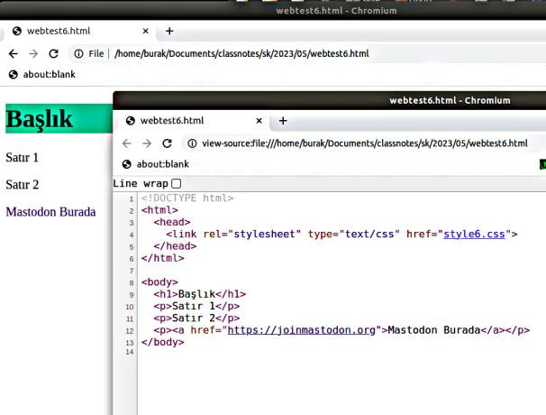
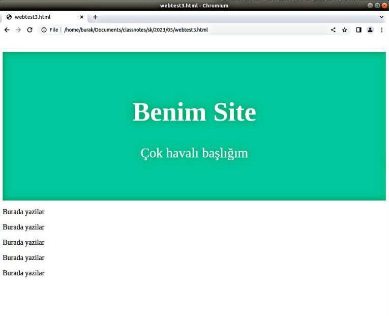

Web Sayfaları, HTML ve CSS
Görsel HTML sayfalarının arkasında aslında pür metin bazlı bir komut serisi var. Bu komutları düz dosyaya (text) yazabilen herkes bir görsel Web programcısı olabilir. Mevcut sayfalarda bu kodları görebiliriz, mesela Chrome, Firefox gibi tarayıcılarda Ctrl+U tuşlarına basınca View Source isletilir ve HTML kaynağı burada görülebilir. Bu blog'un ana sayfasının HTML kodları şöyle,
{kind=link}
Sıfırdan bir HTML yaratalım;
<h1>Merhaba Dünya</h1>
<p>Burada bazı yazılar</p>
<p>Satır 2</p>
Windows üzerinde Notepad var, üsttekileri oraya yazıp index.html
diye bu dosyayı kaydedebiliriz ve o dosyaya tıklayınca otomatik olarak
çıktı tarayıcıyı başlatır.
Mac üzerinde TextEdit mevcut, File > New seçilir, sonra Format > Make Plain Text. Üstteki HTML kodu buraya girilir, şimdi File > Save seçilir, sonu .html ile biten bir dosya ismi seçilir, (mesela index.html), ve Save tıklanır. Eğer hangi sonek (extension) kullanılacağı soruluyorsa to “Use .html.” seçilir.
Görüntü şöyle olacak
HTML'de görüntü çıktısı etiketler ile kontrol edilir. Her etiketin bir
başlangıcı ve bitişi var, aradaki metin bu etiketin yarattığı görsel
ortamı yansıtır. Büyük harfli başlık için <h1> ile başlarız </h1>
ile bitiririz, ve aradaki tüm metin büyük harflerle gösterilir.
Benzer şekilde sırasıyla gittike daha küçük boyutlarda <h2>, <h3>
etiketleri de var.
Paragraflar <p>, </p> arasına yazılır.
Tıklanabilir bağlantılar <a href="">... </a> arasında, tıklama
sonrası atlanacak adres href="" içinde ve bağlantının kullanıcıya
gösterdiği metin <a href="..."> ve arasına konulur.
<h1>Başlık</h1>
<p>Satır 1</p>
<p>Satır 2</p>
<p><a href="https://joinmastodon.org">Mastodon Burada</a></p>
Stiller
Web standartının (HTML, CSS bunların parçası) güzel bir tarafı
"içeriği stilden ayırma" özellikleri. Stil bir etikete uygulanan ek
komutlar olabilir, bu komutlar style=".." içine gider, mesela
başlığın arka plan rengini değiştirmek istiyorsam bunu style="background: #1abc9c;"
olarak <h1> etiketine ekleyebilirim. Stil pek çok özelliği kontrol edebilir,
mesela üstteki tıklanabilir bağlantıda üzerinde durunca alt çizgi gösterilmesin
istiyorsam bunu da style="text-decoration:none;" ile etikete söyleyebilirim.
<h1 style="background: #1abc9c;">Başlık</h1>
<p>Satır 1</p>
<p>Satır 2</p>
<p><a style="text-decoration:none;" href="https://joinmastodon.org">Mastodon Burada</a></p>
Tüm stiller ayrılıp HTML içinde ayrı bir bölüme de konabilir. Bu noktada bir HTML
sayfasının nihai formatını göstermek gerekli, bir <head>..</head> bölümü var,
bir de <body>..</body> bölümu var, bizim şimdiye kadar gördüklerimiz <body>
altına gidecek komutlardı. Stil komutları <head> altında ayrı bir <style>
etiketi altına konuyor. O zaman üstteki HTML şöyle değişir,
<!DOCTYPE html>
<html>
<head>
<style>
h1 { background: #1abc9c; }
a { text-decoration:none; }
</style>
</head>
</html>
<body>
<h1>Başlık</h1>
<p>Satır 1</p>
<p>Satır 2</p>
<p><a href="https://joinmastodon.org">Mastodon Burada</a></p>
</body>
Stil kodlarını bir CSS stil dosyası (stylesheet) olarak ayrı bir dosyaya da
yazabilirdik, bu durumda <head> içinde o dosyanin yüklenmesini söylemek
yeterli, stili style6.css içine yazalım,
<!DOCTYPE html>
<html>
<head>
<link rel="stylesheet" type="text/css" href="style6.css">
</head>
</html>
<body>
...
</body>
Tabii her noktada üstteki çıktıları tarayıcıda gösterirken Ctrl+U ile o sayfaya tekabül eden kodları görebiliriz,

Stil Blokları
Üstte gördüğümüz örnekte stili h1 ya da a gibi tüm etiket tiplerine
uyguladık. Fakat a, p komutları HTML içinde çok yaygın uygulanan
etiketlerdir, eğer bazı p blokları için bir stil diğerleri için
farklı bir stil uygulamak istesek ne yapacağız?
Burada CSS sözdizimi bize bazı seçenekler sunuyor. Tekil kimlik id
bazlı, ya da bizim tanımladığımız bir sınıf class bazlı stil
uygulayabiliriz. İbare id özgün bir etiketi hedeflemek için
kullanılabilir, class tanımı ise birden fazla etikete
uygulanabilecek stiller için uygundur. CSS içinde bu blokların tanımı
mesela bir bir c1 için .c1 { ... } kimlik için ise mesela i1
diyelim #i1 { .. } ile yapılır.
Alttaki örnekte farklı p blokları için sınıf ve kimlik bazlı stil
uygulamasını görüyoruz. İlk iki paragrafı aynı sınıfa dahil ettik,
üçüncü ve dördüncü paragraflar ise ayrı kimliklere sahip, onları
CSS içinde teker teker hedeflemek gerekti.
<!DOCTYPE html>
<html>
<head>
<style>
h1 { background: #1abc9c; }
a { text-decoration:none; }
.p_stil_a { background: lightyellow; }
#p_stil_3 { background: lightblue; }
#p_stil_4 { background: lightgray; }
</style>
</head>
</html>
<body>
<h1>Başlık</h1>
<p class="p_stil_a">Satır 1</p>
<p class="p_stil_a">Satır 2</p>
<p id="p_stil_3">Satır 3</p>
<p id="p_stil_4">Satır 4</p>
<p><a href="https://joinmastodon.org">Mastodon Burada</a></p>
</body>
DIV Blok Tanımı
Eğer bazı etiketlere bulundukları yere göre, hangi blok içinde
olduklarına bakarak özellikler atamak istersek <div> komutunu
kullanabiliriz, bu komutun görsel bir özelliği yoktur, sadece gruplamak
için kullanılır.
<!DOCTYPE html>
<html>
<head>
<style>
h1 { background: #1abc9c; }
a { text-decoration:none; }
#d_1 { background: lightblue; }
#d_2 { background: lightgray; }
</style>
</head>
</html>
<body>
<h1>Başlık</h1>
<div id="d_1">
<p>Satır 1</p>
<p>Satır 2</p>
<a href="https://www.kernel.org/category/releases.html">Bağlantı</a>
</div>
<div id="d_2">
<p>Satır 3</p>
<p>Satır 4</p>
</div>
<p><a href="https://joinmastodon.org">Mastodon Burada</a></p>
</body>
Şimdi tüm üsttekileri bir araya koyalım, standart bir site görüntüsü yaratmaya uğraşalım, en üstte geniş bir alanda site ismi, altında bir açıklama, ve sonraki bölümde düz yazılar olsun.
Başlığı yaratmak için dikkat edersek HTML içinde ortalama, boşluk
bırakma yapmadık, tüm bu görüntüsel işler CSS içinde yapıldı. "Benim
Site" başlığı gayet basit <h1>Benim Site</h1> olarak gösterildi;
fakat onun etrafında padding ile 80 piksellik ekstra yer açtık,
yazıyı text-align ile ortaladık ve arka plan rengini background
ile tanımladık.
<!DOCTYPE html>
<html>
<head>
<style>
.header {
padding: 60px;
text-align: center;
background: #1abc9c;
color: white;
font-size: 30px;
}
</style>
</head>
</html>
<body>
<div class="header">
<h1>Benim Site</h1>
<p>Çok havalı başlığım</p>
</div>
<div id="main">
<p>
Burada yazilar
</p>
<p>
Burada yazilar
</p>
<p>
Burada yazilar
</p>
<p>
Burada yazilar
</p>
<p>
Burada yazilar
</p>
</div>
</body>

Yukarı